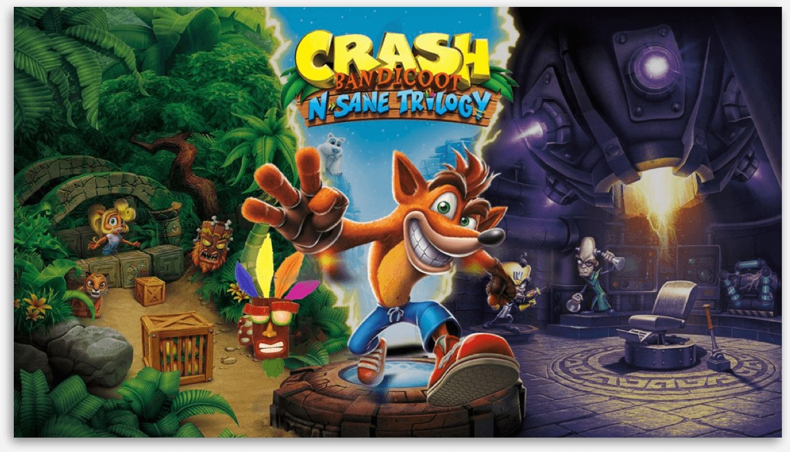
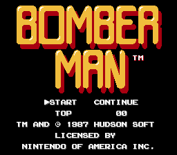

Bienvenido al mundo de los juegos antiguos que formaron la historia de la industria de los videojuegos. Estos juegos representan los mejores videojuegos para las generaciones de aquellos viejos tiempos. Nuestra misión es mantener vivos los juegos de las décadas de 1980 y 1990, que fueron creados para consolas y sistemas que ya no se pueden comprar y que ya no cuentan con el soporte de sus desarrolladores y fabricantes. Gracias a este archivo, puede usar su navegador para jugar juegos antiguos.
Aquí encontrarás el top de los mejores juegos de todos los tiempos.
METAL SLUG

Ningún juego de la saga principal de Metal Slug ha perdido un ápice de su esplendor original. Es más, limpiar de enemigos y colosos mecanizados cada una de las seis misiones de Metal Slug: Super Vehicle-001 a base de balazos, fuego y explosiones en clave de píxel art sigue siendo todo un gustazo. Y a dos jugadores, una bendita locura. Lo era en 1996, cuando los temerarios Marco Rossi y Tarma Roving debutaron en los salones recreativos. Ambos, armados hasta los dientes.
CRASHBANDICOOT
La serie trata de Crash Bandicoot, un marsupial evolucionado por el científico loco Neo Córtex, quien tenía intenciones viles de controlarlo mentalmente para dirigir su ejército de animales mutantes. La historia se desarrolla en unas islas ficticias al sur de Australia, por lo que su fauna y entorno se apegan a esta región. Inicialmente, la misión de Crash Bandicoot era rescatar a su novia Tawna de Neo Córtex, pero luego se transformó en impedir los planes del científico una y otra vez
BOMBERMAN
¡Bomberman es un juego retro en línea del sistema NES (un juego clásico), que se activó para jugar en línea en OldGamehSelf.com desde 2019/10/22. Hasta ahora, esta versión de navegador de Bomberman se ha archivado como una obra de arte del museo y se ha calificado 4.31 de 5 puntos, 313 número tomado en calificar esto. El juego es una especie de acción, aventura, tiro, rgp. También puedes jugar Bomberman nes en el móvil